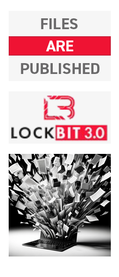
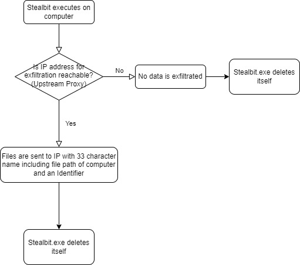
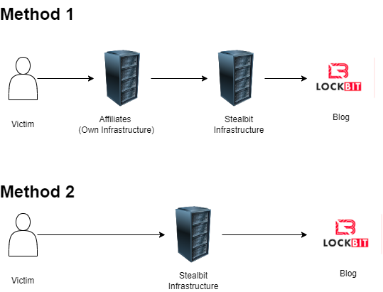

LOCKBIT
THIS ARCHIVE IS OVERSEEN AND UPDATED
BY BUGZORC UNTIL FEBRUARY 24TH 2024.
CHECK GITHUB FOR THE LATEST ARCHIVE.

Stealbit Down!
The NCA have been examining Lockbit's Stealbit tool for a number of months. The below report describes the importance of the tool to Lockbit's platform and how it works. All Stealbit servers have been taken offline as part of this operation through the key work of the FBI, Europol and Law Enforcement partners in Finland and the Netherlands.Analysis
Over the course of this collaborative operation, the NCA have obtained and analysed a great deal of information relating to Lockbit’s bespoke exfiltration tool, ‘Stealbit’. This tool is provided to Lockbit affiliates to facilitate the exfiltration of files from victim organisations and send the files to 1 of 6 upstream proxy servers. The NCA have located these proxy servers and, through the engagement of the FBI and Cronos Group, all 6 have been destroyed. The source code for the script which creates these upstream proxy servers has also been obtained and analysed. We are also in possession of all variants of the StealBit source code.Stealbit is an example of Lockbit’ s attempt to offer a full ‘one stop shop’ service to its affiliates, encryption, exfiltration, negotiation, publishing.
In essence, we have fully analysed and understand how this malware and its associated infrastructure operates. We have located and destroyed the servers, and can locate them again should anyone be misguided enough to attempt it’s use.
Stealbit
Stealbit is an executable and it requires a password to run. Stealbit is designed to exfiltrated files from a company and send the files to 1 of 6 upstream proxy servers. All of these have been located.When Stealbit is executed on a computer, it is able to select files from a specific folder or from the whole computer.The malware then sends the data using a ‘WebDAV header’, which contains a new file name (33 characters in length and begins with 0 or 1), the filepath, computer name and a unique identifier. The unique identifier is a ‘Campaign ID’ that links the targeted victim and the Threat Actor in Lockbit’s administration platform. These details are transferred along with the stolen data as it is exfiltrated, and this enables the affiliate who infected the company to be identified to Lockbit, and, ultimately, get paid. Through these campaign ID’s the link between the victim and affiliates can be established. Once executed, if Stealbit cannot connect to its hardcoded IP address to exfiltrate the stolen data, it will delete itself without any data being transferred.

There have been two methods observed on how affiliates utilise Stealbit. It appears from our observations that method one is the preferred way that data is sent to reach the blog site. By utilising, method two affiliates run the risk of burning Stealbit infrastructure through discovery by Incident Response companies.

Uploaded: 26 Jan, 2024 13:21 UTC
Updated: 26 Jan, 2024 13:21 UTC